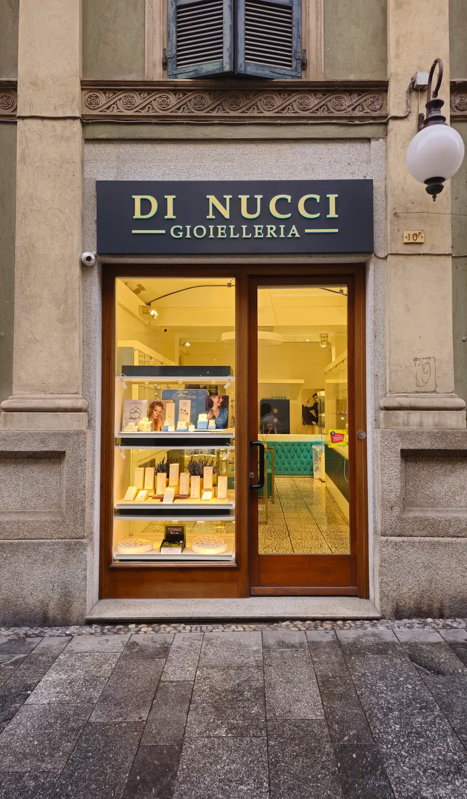

Il simbolo del vostro sì
Fedi nuziali
Materiali di qualità e personalizzazioni curate da mani esperte, per una promessa davvero vostra.
Tutti gli anelli sono completamente finanziabili
Disponibili anche nell’esclusivo oro Champagne
Tre generazioni di esperienza per accompagnarti a scegliere il gioiello che custodirà i tuoi momenti più importanti.

Il simbolo del vostro sì
Materiali di qualità e personalizzazioni curate da mani esperte, per una promessa davvero vostra.
Tutti gli anelli sono completamente finanziabili
La forma di una promessa
Una scelta intima, guidata con ascolto per trovare il gioiello che racconta il vostro amore.
Tutti gli anelli sono completamente finanziabili
Facciamo incisioni a laser, restringiamo o allarghiamo la misura. Su richiesta possiamo realizzare anelli da zero, e quando necessario ripariamo gioielli.
un gioiello per ogni occasione
Ogni gioiello è scelto con cura ed esperienza: venite in negozio e lasciatevi accompagnare nella ricerca del vostro gioiello ideale.
Giorgia e sua mamma accompagnano da sempre le scelte sull’acquisto di ogni gioiello, sia personale che per ogni occasione di regalo! La loro empatia e professionalità è ineguagliabile! Le consiglio vivamente.
Abbiamo acquistato le nostre fedi da Giorgia. Persona disponibile, gentile e che sa consigliarti. Noi siamo molto soddisfatti.
Giorgia è stata veramente gentilissima e molto brava ad accontentare tutte le nostre esigenze. Gioielleria consigliatissima, la migliore della zona.
Buongiorno, trovo sempre grande qualità e estrema collaborazione nella scelta di qualsiasi prodotto, ci serviamo da anni presso la gioielleria Di Nucci e Giorgia la titolare è sempre estremamente gentile e capace. Ci trattano sempre con i guanti. La consiglio vivamente a tutti. Buona giornata.
Personale meraviglioso, cordiale, gentile e disponibile, ci ha accompagnato pazientemente nella scelta delle fedi, consigliandoci con discrezione.
Professionalità, cortesia, altissima qualità: Gioielleria Di Nucci è sinonimo di Eccellenza da sempre. 💎 💍 🔹 💎 💍
Diremo sempre grazie a Giorgia per tutto! Cordialità e professionalità e’ tutto ciò che la distingue. Grazie a lei abbiamo trovato le fedi! Simbolo del nostro amore per sempre!
Storica gioielleria di Viale Roma, trasferitasi in centro da molti anni. Paolo Cornalba.
Ottima esperienza, la titolare ha compreso al volo le nostre esigenze, molto pragmatica e attenta. Consegna nei tempi previsti, ottimo servizio e prodotti di qualità.
Gioielleria molto fornita, personale gentilissimo. Posto in cui tornerò assolutamente per ogni occasione.
Giorgia ha avuto da subito un rapporto molto confidenziale con noi e ci ha guidato nella scelta delle nostre bellissime fedi. È stata un punto di riferimento molto importante e mette molta passione nel suo lavoro.
Eccezionale! Qualità altissima e Giorgia è una persona davvero squisita e super professionale. Consigliatissimo!!!
La scelta delle fedi è sempre un po' complicata perché ci sono tantissimi modelli. Grazie a Giorgia che ci ha consigliato tra le varie opzioni. Ottimo rapporto qualità prezzo.
Ottimo.
Le signore della gioielleria Di Nucci sono state gentilissime nell'accogliere ogni nostra necessità e ci hanno offerto un servizio impeccabile.
Disponibilità, gentilezza, svolgono il loro lavoro con massima professionalità e competenza…
Giovanna e Giorgia le migliori! Sempre disponibili e gentili! Sanno consigliare con ottimo gusto! La consiglio a chiunque, sia per la scelta delle fedi che per qualsiasi altro regalo o acquisto! Grazie.
Professionalita' gentilezza disponibilita'... ottima gioielleria.
Assortimento di fedi e gioielli vasto e grande capacità di consigliare a seconda dei budget. Disponibilità e gentilezza sono una garanzia. È diventa il nostro punto di riferimento per i preziosi.
Ero alla ricerca di un pezzo particolare (una fede sarda), ho girato il mondo e ovunque sono stato messo alla porta…
Giorgia è stata fantastica con noi, ci ha fatto anche stringere le fedi che due settimane prima erano diventate larghe! Strepitosa e molto disponibile!
Storica gioielleria. Proprietari molto disponibili e cortesi. Prezzi competitivi. La consiglio vivamente.
Abbiamo scelto delle fedi in oro giallo semplicissime, ma anche molto comode. Consigliato!
Giorgia e Giovanna semplicemente perfette e impeccabili.
Dopo aver girato diverse gioiellerie, abbiamo notato due piccole vetrine eleganti e semplici, entrando siamo stati accolti da una signora gentilissima che ha proposto una serie di soluzioni estremamente adatte alle nostre aspettative, che dire, davvero bravi, disponibili e, soprattutto, veloci: in meno di due settimane le fedi erano pronte per essere incise, davvero eccezionali, per un ricordo che rimarrà con noi per sempre.
Abbiamo comprato le nostre fedi con loro. Sia la mamma che la figlia sono state molto gentili. Sempre che ho bisogno di qualcosa vado da loro. Il nuovo negozio è molto bello.
Giorgia è davvero molto disponibile e carica! Tempi veloci e assistenza ottima!
Davvero disponibili e coinvolgenti! Le fedi sono stupende e la consulenza per la scelta professionale!
Per le nostre fedi ci siamo affidati a Giorgia, la quale ci ha guidati nella scelta, tenendo conto dei nostri gusti e delle nostre mani, consigliandoci al meglio. La gioielleria Di Nucci offre veramente una gran quantità di svariati modelli per cui sicuramente avrete solo l'imbarazzo della scelta. Inoltre, i tempi di consegna sono stati veramente celeri. Siamo molto soddisfatti della nostra scelta e grati a Giorgia e alla sua mamma! Milena e Matteo.
Abbiamo acquistato da loro le fedi per il nostro matrimonio e dei pensieri per i nostri testimoni. Giorgia è stata come sempre una conferma, ci ha aiutato a scegliere le fedi per noi più indicate ed è stata con noi super disponibile quando abbiamo richiesto un specifico oggetto come pensiero per i nostri testimoni. È riuscita a farci arrivare in gioielleria quello che cercavamo entro i tempi richiesti, non potremo che tornare qui per i prossimi eventi.
Siamo nel centro storico di Novara, in Corso Cavour, una delle vie principali, e siamo facilmente raggiungibili a piedi o con i mezzi.